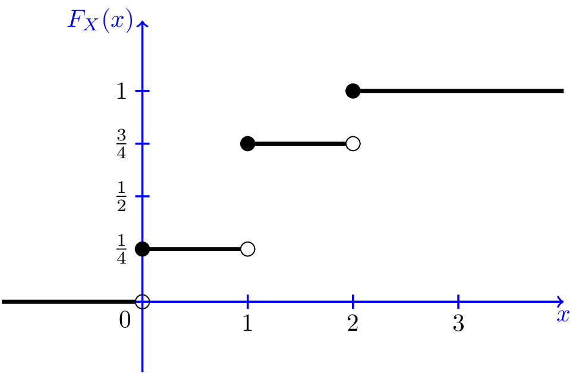

Lecture 2: Review of Probability
Zheng Tian
Created: 2017-02-22 Wed 08:42
Random Variables and Probability Distributions
Defining probabilities and random variables
Experiments and outcomes
- An experiment is the processes that generate random results
- The outcomes of an experiment are its mutually exclusive potential results.
- Example: tossing a coin. The outcome is either getting a head(H) or a tail(T) but not both.
Sample space and events
- A sample space consists of all the outcomes from an experiment,
denoted with the set \(S\).
- \(S = \{H, T\}\) in the tossing-coin experiment.
- An event is a subset of the sample
space.
- Getting a head is an event, which is \(\{H\} \subset \{H, T\}\).
Probability
An intuitive definition of probability
- The probability of an event is the proportion of the time that the event will occur in the long run.
- For example, we toss a coin for \(n\) times and get \(m\) heads. When \(n\) is very large, we can say that the probability of getting a head in a toss is \(m/n\).
An axiomatic definition of probability
- A probability of an event \(A\) in the sample space \(S\), denoted as
\(\mathrm{Pr}(A)\), is a function that assign \(A\) a real number in \([0,
1]\), satisfying the following three conditions:
- \(0 \leq \mathrm{Pr}(A) \leq 1\).
- \(\mathrm{Pr}(S) = 1\).
- For any disjoint sets, \(A\) and \(B\), that is \(A\) and \(B\) have no element in common, \(\mathrm{Pr}(A \cup B) = \mathrm{Pr}(A) + \mathrm{Pr}(B)\).
Random variables
The definition of random variables
- A random variable is a numerical summary associated with the outcomes of an experiment.
- You can also think of a random variable as a function mapping from an event \(\omega\) in the sample space \(\Omega\) to the real line.
An illustration of random variables

Figure 1: An illustration of random variable
Discrete and continuous random variables
Random variables can take different types of values
- A discrete random variables takes on a discrete set of values, like \(0, 1, 2, \ldots, n\)
- A continuous random variable takes on a continuum of possble values, like any value in the interval \((a, b)\).
Probability distributions
The probability distribution for a discrete random variable
- The probability distribution of a discrete random variable is the list of all possible values of the variable and the probability that each value will occur. These probabilities sum to 1.
The probability mass function. Let \(X\) be a discrete random variable. The probability distribution of \(X\) (or the probability mass function), \(p(x)\), is
\begin{equation*} p(x) = \mathrm{Pr}(X = x) \end{equation*}- The axioms of probability require that
- \(0 \leq p(x) \leq 1\)
- \( \sum_{i=1}^n p(x_i) = 1\).
An example of the probability distribution of a discrete random variable
| \(X\) | 1 | 2 | 3 | Sum |
|---|---|---|---|---|
| \(\mathrm{P}(x)\) | 0.25 | 0.75 | 0.25 | 1 |
The cumulative probability distribution
The cumulative probability distribution (or the cumulative distribution function, c.d.f.):
Let \(F(x)\) be the c.d.f of \(X\). Then \(F(x) = \mathrm{Pr}(X \leq x)\).
The c.d.f. of a discrete random variable is a step function
| \(X\) | 1 | 2 | 3 | Sum |
|---|---|---|---|---|
| \(\mathrm{P}(x)\) | 0.25 | 0.50 | 0.25 | 1 |
| C.d.f. | 0.25 | 0.75 | 1 | -- |

Figure 2: The c.d.f. of a discrete random variable
Bernouli distribution
The Bernoulli distribution
The probability distribution of a continuous random variable
Definition of the c.d.f. and the p.d.f. of a continuous random variable
- The cumulative distribution function of a continous random variable is defined as it is for a discrete random variable. \[ F(x) = \mathrm{Pr}(X \leq x) \]
- The probability density function (p.d.f.) of \(X\) is the function that satisfies \[ F(x) = \int_{-\infty}^{x} f(t) \mathrm{d}t \text{ for all } x \]
Properties of the c.d.f.
- For both discrete and continuous random variable, \(F(X)\) must satisfy
the following properties:
- \(F(+\infty) = 1 \text{ and } F(-\infty) = 0\) (\(F(x)\) is bounded between 0 and 1)
- \(x > y \Rightarrow F(x) \geq F(y)\) (\(F(x)\) is nondecreasing)
- By the definition of the c.d.f., we can conveniently calculate
probabilities, such as,
- \(\mathrm{P}(x > a) = 1 - \mathrm{P}(x \leq a) = 1 - F(a)\)
- \(\mathrm{P}(a < x \leq b) = F(b) - F(a)\).
The c.d.f. and p.d.f. of a normal distribution

Figure 3: The p.d.f. and c.d.f. of a continuous random variable (the normal distribution)
Expectation, Variance, and Other Moments
The expected value of a random variable
The expected value
- The expected value of a random variable, X, denoted as \(\mathrm{E}(X)\), is the long-run average of the random variable over many repeated trials or occurrences, which is also called the expectation or the mean.
- The expected value measures the centrality of a random variable.
Mathematical definition
- For a discrete random variable \[ \mathrm{E}(X) = \sum_{i=1}^n x_i \mathrm{Pr}(X = x_i) \]
- e.g. The expectation of a Bernoulli random variable, \(G\), \[ \mathrm{E}(G) = 1 \cdot p + 0 \cdot (1-p) = p \]
- For a continuous random variable \[ \mathrm{E}(X) = \int_{-\infty}^{\infty} x f(x) \mathrm{d}x\]
The variance and standard deviation
Definition of variance and standard deviation
- The variance of a random variable \(X\) measures its average deviation from its own expected value.
Let \(\mathrm{E}(X) = \mu_X\). Then the variance of \(X\),
\begin{align*} \mathrm{Var}(X) & = \sigma^2_X = \mathrm{E}(X-\mu_X)^{2} \\ & = \begin{cases} \sum_{i=1}^n (x - \mu_X)^{2}\mathrm{Pr}(X = x_i) & \text{if } X \text{ is discrete} \\ \int_{-\infty}^{\infty} (x - \mu_X)^{2}f(x)\mathrm{d} x & \text{if } X \text{ is continuous} \end{cases} \end{align*}- The standard deviation of \(X\): σX = \sqrt{\mathrm{Var}(X)}$
Computing variance
- A convenient formula for calculating the variance is \[ \mathrm{Var}(X) = \mathrm{E}(X - \mu_X)^{2} = \mathrm{E}(X^{2}) - \mu_X^{2} \]
- The variance of a Bernoulli random variable, \(G\) \[ \mathrm{Var}(G) = (1-p)^{2}p + (0-p)^{2}(1-p) = p(1-p) \]
- The expectation and variance of a linear function of \(X\). Let \(Y = a +
bX\), then
- \(\mathrm{E}(Y) = a + \mathrm{E}(X)\)
- \(\mathrm{Var}(Y) = \mathrm{Var}(a + b X) = b^{2} \mathrm{Var}(X)\).
Moments of a random variable, skewness and kurtosis
Definition of the moments of a distribution
- kth moment
- The kth moment of the distribution of \(X\) is \(\mathrm{E}(X^{k})\). So, the expectation is the "first" moment of \(X\).
- kth central moment
- The kth central moment of the distribution of \(X\) with its mean \(\mu_X\) is \(\mathrm{E}(X - \mu_X)^{k}\). So, the variance is the second central moment of \(X\).
Skewness
The skewness of a distribution provides a mathematical way to describe how much a distribution deviates from symmetry.
\[ \text{Skewness} = \mathrm{E}(X - \mu_X)^{3}/\sigma_{X}^{3} \]
- A symmetric distribution has a skewness of zero.
- The skewness can be either positive or negative.
- That \(\mathrm{E}(X - \mu_X)^3\) is divided by \(\sigma^3_X\) is to make the skewness measure unit free.
Kurtosis
The kurtosis of the distribution of a random variable \(X\) measures how much of the variance of \(X\) arises from extreme values, which makes the distribution have "heavy" tails.
\[ \text{Kurtosis} = \mathrm{E}(X - \mu_X)^{4}/\sigma_{X}^{4} \]
- The kurtosis must be positive.
- The kurtosis of the normal distribution is 3. So a distribution that has its kurtosis exceeding 3 is called heavy-tailed.
- The kurtosis is also unit free.
An illustration of skewness and kurtosis

- All four distributions have a mean of zero and a variance of one, while (a) and (b) are symmetric and (b)-(d) are heavy-tailed.
Two Random Variables
The joint and marginal distributions
The joint probability function of two discrete random variables
- The joint distribution of two random variables \(X\) and \(Y\) is \[ p(x, y) = \mathrm{Pr}(X = x, Y = y)\]
- \(p(x, y)\) must satisfy
- \(p(x, y) \geq 0\)
- \(\sum_{i=1}^n\sum_{j=1}^m p(x_i, y_j) = 1\) for all possible combinations of values of \(X\) and \(Y\).
The joint probability function of two continuous random variables
- For two continuous random variables, \(X\) and \(Y\), the counterpart of \(p(x, y)\) is
the joint probability density function, \(f(x, y)\), such that
- \(f(x, y) \geq 0\)
- \(\int_{-\infty}^{{\infty}} \int_{-\infty}^{\infty} f(x, y)\, dx\, dy= 1\)
The marginal probability distribution
- The marginal probability distribution of a random variable \(X\) is simply the probability distribution of its own.
- For a discrete random variable, we can compute the marginal distribution of \(X\) as \[ \mathrm{Pr}(X=x) = \sum_{i=1}^n \mathrm{Pr}(X, Y=y_i) = \sum_{i=1}^n p(x, y_i) \]
- For a continuous random variable, the marginal distribution is \[f_X(x) = \int_{-\infty}^{\infty} f(x, y)\, dy \]
An example of joint and marginal distributions
| Rain (\(X=0\)) | No rain (\(X=1\)) | Total | |
|---|---|---|---|
| Long commute (\(Y=0\)) | 0.15 | 0.07 | 0.22 |
| Short commute (\(Y=1\)) | 0.15 | 0.63 | 0.78 |
| Total | 0.30 | 0.70 | 1 |
Conditional distributions
The conditional probability
For any two events \(A\) and \(B\), the conditional probability of A given B is defined as
\begin{equation*} \mathrm{Pr}(A|B) = \frac{\mathrm{Pr}(A \cap B)}{\mathrm{Pr}(B)} \end{equation*}
Conditional probability illustrated

Figure 5: An illustration of conditional probability
The conditional probability distribution
- The conditional distribution of a random variable \(Y\) given another random variable \(X\) is \(\mathrm{Pr}(Y | X=x)\).
- The formula to compute it is \[ \mathrm{Pr}(Y | X=x) = \frac{\mathrm{Pr}(X=x, Y)}{\mathrm{Pr}(X=x)} \]
- For continuous random variables \(X\) and \(Y\), we define the conditional density function as \[ f(y|x) = \frac{f(x, y)}{f_X(x)} \]
The conditional expectation
- The conditional expectation of \(Y\) given \(X\) is the expected value of the conditional distribution of \(Y\) given \(X\).
For discrete random variables, the conditional mean of \(Y\) given \(X=x\) is
\begin{equation*} \mathrm{E}(Y \mid X=x) = \sum_{i=1}^n y_i \mathrm{Pr}(Y \mid X=x) \end{equation*}For continuous random variables, it is computed as
\begin{equation*} \int_{-\infty}^{\infty} y f(y \mid x)\, dy \end{equation*}- The expected mean of commuting time given it is raining is \(0 \times 0.1 + 1 \times 0.9 = 0.9\).
The law of iterated expectation
The law of iterated expectation:
\[ \mathrm{E}(Y) = E \left[ \mathrm{E}(Y|X) \right] \]
- It says that the mean of \(Y\) is the weighted average of the conditional expectation of \(Y\) given \(X\), weighted by the probability distribution of \(X\). That is, \[ \mathrm{E}(Y) = \sum_{i=1}^n \mathrm{E}(Y \mid X=x_i) \mathrm{Pr}(X=x_i) \]
- If \(\mathrm{E}(X|Y) = 0\), then \(\mathrm{E}(X)=E\left[\mathrm{E}(X|Y)\right]=0\).
Conditional variance
- With the conditional mean of \(Y\) given \(X\), we can compute the conditional variance as \[ \mathrm{Var}(Y \mid X=x) = \sum_{i=1}^n \left[ y_i - \mathrm{E}(Y \mid X=x) \right]^2 \mathrm{Pr}(Y=y_i \mid X=x) \]
- From the law of iterated expectation, we can get the following \[ \mathrm{Var}(Y) = \mathrm{E}(\mathrm{Var}(Y \mid X)) + \mathrm{Var}(\mathrm{E}(Y \mid X)) \]
Independent random variables
- Two random variables \(X\) and \(Y\) are independently distributed, or independent, if knowing the value of one of the variable provides no information about the other.
- Mathematically, it means that \[ \mathrm{Pr}(Y=y \mid X=x) = \mathrm{Pr}(Y=y) \]
- If \(X\) and \(Y\) are independent \[ \mathrm{Pr}(Y=y, X=x) = \mathrm{Pr}(X=x) \mathrm{Pr}(Y=y) \]
Independence between two continuous random variable
- For two continuous random variables, \(X\) and \(Y\), they are independent if \[ f(x|y) = f_{X}(x) \text{ or } f(y|x) = f_{Y}(y) \]
- It follows that if \(X\) and \(Y\) are independent \[ f(x, y) = f(x|y)f_{Y}(y) = f_{X}(x)f_{Y}(y) \]
Covariance and Correlation
Covariance
The covariance of two discrete random variables \(X\) and \(Y\) is
\begin{align*} \mathrm{Cov}(X, Y) & = \sigma_{XY} = \mathrm{E}(X-\mu_{X})(Y-\mu_{Y}) \\ & = \sum_{i=1}^n \sum_{j=1}^m (x_i - \mu_X)(y_j - \mu_Y) \mathrm{Pr}(X=x_i, Y=y_j) \end{align*}- For continous random variables, the covariance of \(X\) and \(Y\) is \[ \mathrm{Cov}(X, Y) = \int_{-\infty}^{\infty} \int_{-\infty}^{\infty} (x-\mu_X)(y-\mu_y)f(x, y) dx dy \]
- The covariance can also be computed as \[ \mathrm{Cov}(X, Y) = \mathrm{E}(XY) - \mathrm{E}(X)\mathrm{E}(Y) \]
Correlation coefficient
The correlation coefficient of \(X\) and \(Y\) is
\[ \mathrm{corr}(X, Y) = \rho_{XY} = \frac{\mathrm{Cov}(X, Y)}{\left[\mathrm{Var}(X)\mathrm{Var}(Y)\right]^{1/2}} = \frac{\sigma_{XY}}{\sigma_{X}\sigma_{Y}} \]
- \(-1 \leq \mathrm{corr}(X, Y) \leq 1\).
- \(\mathrm{corr}(X, Y)=0\) (or \(\mathrm{Cov}(X,Y)=0\)) means that \(X\) and \(Y\) are uncorrelated.
- Since \(\mathrm{Cov}(X, Y) = \mathrm{E}(XY) - \mathrm{E}(X)\mathrm{E}(Y)\), when \(X\) and \(Y\) are uncorrelated, then \(\mathrm{E}(XY) = \mathrm{E}(X) \mathrm{E}(Y)\).
Independence and uncorrelation
If \(X\) and \(Y\) are independent, then
\begin{align*} \mathrm{Cov}(X, Y) & = \sum_{i=1}^n \sum_{j=1}^m (x_i - \mu_X)(y_j - \mu_Y) \mathrm{Pr}(X=x_i) \mathrm{Pr}(Y=y_j) \\ & = \sum_{i=1}^n (x_i - \mu_X) \mathrm{Pr}(X=x_i) \sum_{j=1}^m (y_j - \mu_y) \mathrm{Pr}(Y=y_j) \\ & = 0 \times 0 = 0 \end{align*}- That is, if \(X\) and \(Y\) are independent, they must be uncorrelated.
- However, the converse is not true. If \(X\) and \(Y\) are uncorrelated, there is a possibility that they are actually dependent.
Conditional mean and correlation
- If \(X\) and \(Y\) are independent, then we must have \(\mathrm{E}(Y \mid X) = \mathrm{E}(Y) = \mu_Y\)
Then, we can prove that \(\mathrm{Cov}(X, Y) = 0\) and \(\mathrm{corr}(X, Y)=0\).
\begin{align*} \mathrm{E}(XY) & = \mathrm{E}(\mathrm{E}(XY \mid X)) = \mathrm{E}(X \mathrm{E}(Y \mid X)) \\ & = \mathrm{E}(X) \mathrm{E}(Y \mid X) = \mathrm{E}(X) \mathrm{E}(Y) \end{align*}It follows that \(\mathrm{Cov}(X,Y) = \mathrm{E}(XY) - \mathrm{E}(X) \mathrm{E}(Y) = 0\) and \(\mathrm{corr}(X, Y)=0\).
Some useful operations
The following properties of \(\mathrm{E}(\cdot)\), \(\mathrm{Var}(\cdot)\) and \(\mathrm{Cov}(\cdot)\) are useful in calculation,
Four Specific Distributions
The normal distribution
The normal distribution
- The p.d.f. of a normally distributed random variable \(X\) is \[ f(x) = \frac{1}{\sigma\sqrt{2\pi}}\exp\left[-\frac{(x-\mu)^{2}}{2\sigma^{2}}\right] \]
- \(\mathrm{E}(X) = \mu\) and \(\mathrm{Var}(X) = \sigma^{2}\).
- We write \(X \sim N(\mu, \sigma^{2})\)
The standard normal distribution
- The standard normal distribution is a special case of the normal distribution, for which \(\mu = 0\) and \(\sigma = 0\). The p.d.f of the standard normal distribution is \[ \phi(x) = \frac{1}{\sqrt{2\pi}}\exp\left(-\frac{x^2}{2}\right) \]
- The c.d.f of the standard normal distribution is often denoted as \(\Phi(x)\).
Symmetric and skinny tails
- The normal distribution is symmetric around its mean, \(\mu\), with the skewness equal 0
- It has 95% of its probability between \(\mu-1.96\sigma\) and \(\mu+1.96\sigma\), with the kurtosis equal 3.

Figure 6: The normal probability density
Transforming a normally distributed random variable to the standard normal distribution
- Let \(X\) be a random variable with a normal distribution, i.e., \(X \sim N(\mu, \sigma^2)\).
- We compute \(Z = (X-\mu)/\sigma\), which follows the standard normal distribution, \(N(0, 1)\).
- For example, if \(X \sim N(1, 4)\), then \(Z = (X-1)/2 \sim N(0, 1)\). When we want to find \(\mathrm{Pr}(X \leq 4)\), we only need to compute \(\Phi(3/2)\)
Generally, for any two number \(c_1 < c_2\) and let \(d_1 = (c_1 - \mu)/\sigma\) and \(d_2 = (c_2 - \mu)/\sigma\), we have
\begin{align*} \mathrm{Pr}(X \leq c_2) & = \mathrm{Pr}(Z \leq d_2) = \Phi(d_2) \\ \mathrm{Pr}(X \geq c_1) & = \mathrm{Pr}(Z \geq d_1) = 1 - \Phi(d_1) \\ \mathrm{Pr}(c_1 \leq X \leq c_2) & = \mathrm{Pr}(d_1 \leq Z \leq d_2) = \Phi(d_2) - \Phi(d_1) \end{align*}
The multivariate normal distribution
- The multivariate normal distribution is the joint distribution of a set of random variables.
- The p.d.f. of the multivariate normal distribution is beyond the scope of this course, but the following properties make this distribution handy in analysis.
Important properties of the multivariate normal distribution
- If n random variables, \(x_1, \ldots, x_n\), have a multivariate normal distribution, then any linear combination of these variables is normally distributed. For any real numbers, \(\alpha_1, \ldots, \alpha_n\), a linear combination of \({x_i}\) is \(\sum_i \alpha_i x_i\).
- If a set of random variables has a multivariate normal distribution, then the marginal distribution of each of the variables is normal.
- If random variables with a multivariate normal distribution have covariances that equal zero, then these random variables are independent.
- If \(X\) and \(Y\) have a bivariate normal distribution, then \(\mathrm{E}(Y|X = x) = a + bx\), where \(a\) and \(b\) are constants.
The chi-squared distribution
- Let \(Z_1, \ldots, Z_n\) be n indepenent standard normal distribution, i.e. \(Z_i \sim N(0, 1)\) for all \(i = 1, \ldots, n\). Then, the random variable \[W = \sum_{i=1}^n Z^2_i \] has a chi-squared distribution with \(n\) degrees of freedom, denoted as \(W \sim \chi^2(n)\), with \(\mathrm{E}(W) = n\) and \(\mathrm{Var}(W) = 2n\)
- If \(Z \sim N(0, 1)\), then \(W = Z^2 \sim \chi^2(1)\) with \(\mathrm{E}(W) = 1\) and \(\mathrm{Var}(W) = 2\).
The student t distribution
- Let \(Z \sim N(0, 1)\), \(W \sim \chi^2(m)\), and \(Z\) and \(W\) be independently distributed. Then, the random variable \[t = \frac{Z}{\sqrt{W/m}} \] has a student t distribution with \(m\) degrees of freedom, denoted as \(t \sim t(m)\).
- As \(n\) increases, \(t\) gets close to a standard normal distribution.
The F distribution
- Let \(W_1 \sim \chi^2(n_1)\), \(W_2 \sim \chi^2(n_2)\), and \(W_1\) and \(W_2\) are independent. Then, the random variable \[ F = \frac{W_1/n_1}{W_2/n_2}\] has an F distribution with \((n_1, n_2)\) degrees of freedom, denoted as \(F \sim F(n_1, n_2)\)
- If \(t \sim t(n)\), then \(t^2 \sim F(1, n)\)
- As \(n_2 \rightarrow \infty\), the \(F(n_1, \infty)\) distribution is the same as the \(\chi^2(n_1)\) distribution divided by \(n_1\).